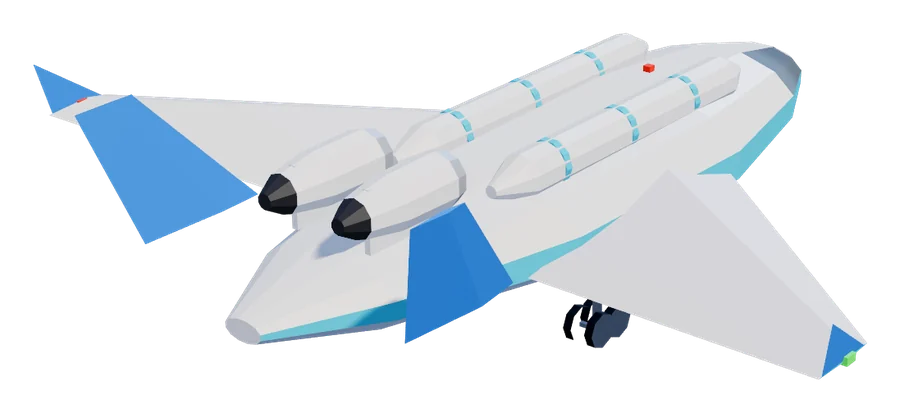

Avions
Tots els avions.
Ràpids i cars. Els avions volen entre aeroports.
 Petrel Mailplane1950 · 225 km/h
Petrel Mailplane1950 · 225 km/h Skylark Prop1950 · 255 km/h
Skylark Prop1950 · 255 km/h Stork Cargo Prop1958 · 245 km/h
Stork Cargo Prop1958 · 245 km/h Albatross Jet1962 · 450 km/h
Albatross Jet1962 · 450 km/h Kittiwake Turboprop1968 · 330 km/h
Kittiwake Turboprop1968 · 330 km/h Pelican Freighter1975 · 390 km/h
Pelican Freighter1975 · 390 km/h Arrow Supersonic1977 · 840 km/h
Arrow Supersonic1977 · 840 km/h Condor Jumbo1978 · 510 km/h
Condor Jumbo1978 · 510 km/h Osprey Widebody1984 · 495 km/h
Osprey Widebody1984 · 495 km/h Falcon Narrowbody1989 · 465 km/h
Falcon Narrowbody1989 · 465 km/h Swift Regional Jet1996 · 480 km/h
Swift Regional Jet1996 · 480 km/h Leviathan Double-Deck2007 · 510 km/h
Leviathan Double-Deck2007 · 510 km/h Breeze Electric Commuter2030 · 285 km/h
Breeze Electric Commuter2030 · 285 km/h
Aurora H2 Airliner2038 · 480 km/h
| Model | Des de | Porta | Capacitat | Velocitat | Preu | Funcionament, l'any |
|---|---|---|---|---|---|---|
| Petrel Mailplane | 1950 | Correu, Mercaderies, Diaris | 14 | 225 km/h | 30.000 $ | 3.200 $ |
| Skylark Prop | 1950 | Passatgers, Correu | 34 | 255 km/h | 64.000 $ | 7.600 $ |
| Stork Cargo Prop | 1958 | Mercaderies, Correu, Aliments, Peix, Electrònica | 32 | 245 km/h | 78.000 $ | 7.200 $ |
| Albatross Jet | 1962 | Passatgers, Correu | 110 | 450 km/h | 185.000 $ | 17.000 $ |
| Kittiwake Turboprop | 1968 | Passatgers, Correu | 64 | 330 km/h | 98.000 $ | 9.000 $ |
| Pelican Freighter | 1975 | Mercaderies, Correu, Aliments, Peix, Electrònica | 70 | 390 km/h | 230.000 $ | 19.000 $ |
| Arrow Supersonic | 1977 | Passatgers, Correu | 100 | 840 km/h | 520.000 $ | 52.000 $ |
| Condor Jumbo | 1978 | Passatgers, Correu | 280 | 510 km/h | 390.000 $ | 30.000 $ |
| Osprey Widebody | 1984 | Passatgers, Correu | 240 | 495 km/h | 300.000 $ | 21.000 $ |
| Falcon Narrowbody | 1989 | Passatgers, Correu | 160 | 465 km/h | 210.000 $ | 13.500 $ |
| Swift Regional Jet | 1996 | Passatgers, Correu | 90 | 480 km/h | 160.000 $ | 12.000 $ |
| Leviathan Double-Deck | 2007 | Passatgers, Correu | 480 | 510 km/h | 620.000 $ | 42.000 $ |
| Breeze Electric Commuter | 2030 | Passatgers, Correu | 40 | 285 km/h | 120.000 $ | 3.200 $ |
| Aurora H2 Airliner | 2038 | Passatgers, Correu | 180 | 480 km/h | 340.000 $ | 9.000 $ |
- Qualsevol càrrega és tota càrrega tret de passatgers, cotxes. Qualsevol càrrega a granel tampoc inclou correu, diaris.
- La vida útil d'aquest tipus és de 20 anys: consulta Envelliment i renovació.